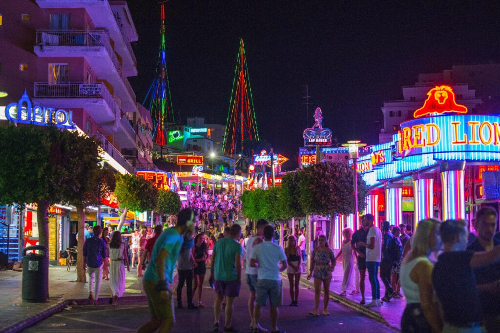

Dimitri's Travel Blog
This is a college project! Welcome to Dimitri's travel blog! I'm excited to share with you my personal recommendations for fantastic summer destinations. From tranquil beaches to vibrant cities, I'll guide you through the best places to visit and the most thrilling activities to try. Whether you're dreaming of lazy days by the sea or adventurous explorations, this website is your ultimate resource for unforgettable summer vacations. Join me on this journey, and let's make your summer unforgettable!
Holiday Destinations!
Travel Tips & More!

I've traveled to exciting places like New York, Mallorca in Spain, and several countries in Eastern Europe such as Poland, Belarus, Lithuania, and Latvia. Along the way, I've gained valuable experience and gathered travel tips that can make your trips much more enjoyable. Whether it's navigating the bustling streets of New York City or relaxing on the beautiful beaches of Mallorca, I'm here to share my knowledge and help you have unforgettable travel experiences.
Benefits
My travel blog offers a wealth of benefits for anyone looking to embark on exciting adventures. Firstly, it's packed with firsthand experiences and insights, providing invaluable guidance on destinations, activities, and local cuisines. Through my blog, readers can gain insider knowledge that can't be found in traditional travel guides. Additionally, it's a cost-effective resource – all the information is freely accessible, making it an excellent tool for budget-conscious travelers. Furthermore, my blog is adorned with captivating photographs, offering readers a visual feast that transports them to far-off lands. Whether you're a seasoned traveler or someone dreaming of their first trip abroad, my blog is a must-visit destination for inspiration, tips, and recommendations to enhance your travel experiences.
Gallery
Step into my gallery. Here, you'll find snapshots from all the amazing places I've visited.